Fungsi
Jika Anda baru mengenal fungsi di Excel, kami menyarankan Anda untuk membaca pengantar kami tentang Rumus dan Fungsi terlebih dahulu.
Fungsi COUNT dan SUM
COUNT | COUNTIF | COUNTIFS | SUM | SUMIF | SUMIFS
Download file latihan count-sum-functions.xlsx
Fungsi yang paling banyak digunakan di Excel adalah fungsi COUNT dan SUM. Anda dapat menghitung dan menjumlahkan berdasarkan satu kriteria atau beberapa kriteria.
COUNT
Untuk menghitung jumlah sel yang berisi angka, gunakan fungsi COUNT.

Catatan: untuk Hitung Sel Kosong/Tidak Kosong (Count Blank/Nonblank Cells) di Excel, gunakan COUNTBLANK dan COUNTA.
Contoh Penggunaan Hitung Sel Kosong/Tidak Kosong
Hitung Sel Kosong/Tidak Kosong (Count Blank/Nonblank Cells)
Contoh ini menunjukkan Anda bagaimana untuk menghitung kosong dan nonblank sel di Excel.
-
Fungsi COUNTBLANK di bawah ini menghitung jumlah sel kosong dalam Range A1:A7.

-
Fungsi COUNTA di bawah ini menghitung jumlah sel yang tidak kosong dalam Range A1:A7. COUNTA adalah singkatan dari hitung semua.

-
Fungsi COUNTIFS di bawah ini menghitung jumlah sel kosong dalam Range B1:B7 dengan satu kriteria tambahan (biru).

Penjelasan: fungsi COUNTIFS (dengan huruf S di akhir) di Excel menghitung sel berdasarkan dua atau lebih kriteria. Gunakan string kosong (dua tanda kutip ganda tanpa apa pun di antaranya) untuk menemukan sel kosong.
-
Fungsi COUNTIFS di bawah ini menghitung jumlah sel tidak kosong dalam Range B1:B7 dengan satu kriteria tambahan (merah muda).
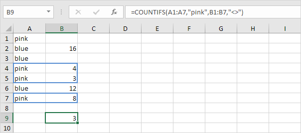
COUNTIF
Untuk menghitung sel berdasarkan satu kriteria (misalnya, lebih besar dari 9), gunakan fungsi COUNTIF berikut.

Contoh Penggunaan Fungsi COUNTIF
COUNTIF
Kriteria Numerik | Trik Teks | Count Boolean | Count Errors | And Kriteria | Or Kriteria | Lebih lanjut tentang Countif | Count Magic
Download file latihan countif.xlsx
Fungsi COUNTIF yang kuat di Excel menghitung sel berdasarkan satu kriteria. Halaman ini berisi banyak contoh COUNTIF yang mudah diikuti.
Kriteria Numerik
Gunakan fungsi COUNTIF di Excel untuk menghitung sel yang sama dengan nilai, menghitung sel yang lebih besar atau sama dengan nilai, dll.
-
Fungsi COUNTIF di bawah ini menghitung jumlah sel yang sama dengan 20.

-
Fungsi COUNTIF berikut memberikan hasil yang sama persis.

-
Fungsi COUNTIF di bawah ini menghitung jumlah sel yang lebih besar atau sama dengan 10.

-
Fungsi COUNTIF berikut memberikan hasil yang sama persis.

Penjelasan: operator & menggabungkan simbol 'lebih besar dari atau sama dengan' dan nilai di sel C1.
-
Fungsi COUNTIF di bawah ini menghitung jumlah sel yang tidak sama dengan 7.
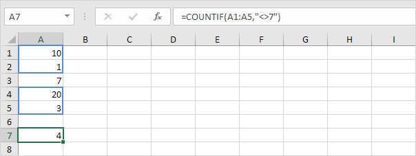
-
Fungsi COUNTIF di bawah ini menghitung jumlah sel yang sama dengan 3 atau 7.

Trik Teks
Gunakan fungsi COUNTIF di Excel dan beberapa trik untuk menghitung sel yang berisi teks tertentu. Selalu sertakan teks dalam tanda kutip ganda.
-
Fungsi COUNTIF di bawah ini menghitung jumlah sel yang berisi persis bintang.

-
Fungsi COUNTIF di bawah ini menghitung jumlah sel yang berisi persis bintang + 1 karakter. Tanda tanya (?) cocok dengan tepat satu karakter.
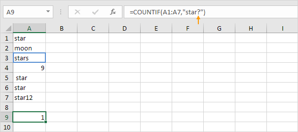
-
Fungsi COUNTIF di bawah ini menghitung jumlah sel yang berisi persis bintang + serangkaian karakter nol atau lebih. Tanda bintang (*) cocok dengan serangkaian karakter nol atau lebih.
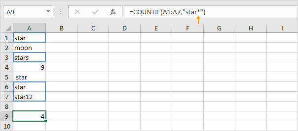
-
Fungsi COUNTIF di bawah ini menghitung jumlah sel yang mengandung bintang dengan cara apa pun.

-
Fungsi COUNTIF di bawah ini menghitung jumlah sel yang berisi teks.

Count Boolean
Gunakan fungsi COUNTIF di Excel untuk menghitung nilai Boolean (TRUE atau FALSE).
-
Fungsi COUNTIF di bawah ini menghitung jumlah sel yang berisi Boolean TRUE.

-
Fungsi COUNTIF di bawah ini menghitung jumlah sel yang berisi Boolean FALSE.
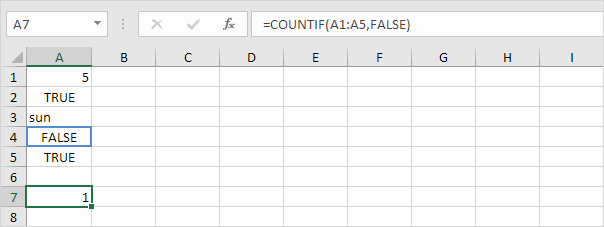
Count Errors
Gunakan fungsi COUNTIF di Excel untuk menghitung kesalahan tertentu.
-
Fungsi COUNTIF di bawah ini menghitung jumlah sel yang berisi #NAME? kesalahan.

-
Rumus array di bawah ini menghitung jumlah total kesalahan dalam Range sel.

Catatan: selesaikan rumus array dengan menekan Ctrl+Shift+Enter. Excel menambahkan kurung kurawal {}. Kunjungi halaman kami tentang Menghitung Kesalahan untuk petunjuk terperinci tentang cara membuat rumus array ini.
And Kriteria
Menghitung dengan kriteria Dan di Excel itu mudah. Fungsi COUNTIFS (dengan huruf S di akhir) di Excel menghitung sel berdasarkan dua atau lebih kriteria.
Misalnya, untuk menghitung jumlah baris yang berisi Google dan Stanford, cukup gunakan fungsi COUNTIFS.

Or Kriteria
Menghitung dengan kriteria Or di Excel bisa jadi rumit.
-
Fungsi COUNTIF di bawah ini menghitung jumlah sel yang berisi Google atau Facebook (satu kolom). Tidak ada ilmu roket sejauh ini.

-
Namun, jika Anda ingin menghitung jumlah baris yang berisi Google atau Stanford (dua kolom), Anda tidak bisa begitu saja menggunakan fungsi COUNTIF dua kali (lihat gambar di bawah).

Catatan: baris yang berisi Google dan Stanford dihitung dua kali, tetapi seharusnya hanya dihitung sekali. 4 adalah jawaban yang kita cari.
-
Rumus array di bawah ini berhasil.

Catatan: selesaikan rumus array dengan menekan Ctrl+Shift+Enter. Excel menambahkan kurung kurawal {}. Kunjungi halaman kami tentang Menghitung dengan Atau Kriteria untuk instruksi terperinci tentang cara membuat rumus array ini.
Lebih lanjut tentang Countif
Fungsi COUNTIF adalah fungsi yang hebat. Mari kita lihat beberapa contoh keren lainnya.
-
Fungsi COUNTIF di bawah ini menggunakan Range bernama. Range bernama Ages mengacu pada Range A1:A6.

-
Fungsi COUNTIF di bawah ini menghitung jumlah sel yang kurang dari rata-rata usia (32,2).

-
Untuk menghitung sel di antara dua angka, gunakan fungsi COUNTIFS (dengan huruf S di akhir).

-
Gunakan fungsi COUNTIF untuk menghitung berapa kali setiap nilai muncul dalam Range bernama Ages.

Catatan: sel B2 berisi rumus =COUNTIF(Usia,A2), sel B3 =COUNTIF(Usia,A3), dll.
-
Tambahkan fungsi IF untuk menemukan duplikatnya.

Tip: gunakan COUNTIF dan pemformatan bersyarat untuk menemukan dan menyorot duplikat di Excel.
Count Magic
Fungsi COUNTIF tidak dapat menghitung berapa kali kata tertentu muncul dalam sel atau Range sel. Yang kita butuhkan hanyalah sedikit sihir!
-
Rumus di bawah ini menghitung berapa kali kata "dog" muncul di sel A1.

-
Rumus di bawah ini menghitung berapa kali kata "dog" muncul dalam Range A1:A2.
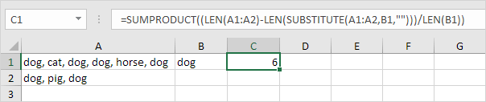
Catatan: kunjungi halaman kami tentang menghitung kata untuk mempelajari lebih lanjut tentang rumus ini.
COUNTIFS
Untuk menghitung baris berdasarkan beberapa kriteria (misalnya, hijau dan lebih besar dari 9, gunakan fungsi COUNTIFS berikut.

SUM
Untuk menjumlahkan rentang sel, gunakan fungsi SUM.
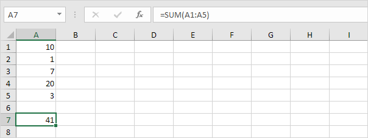
Contoh Penggunaan Fungsi SUM
SUM
Sum Range | Jumlahkan Seluruh Kolom | Jumlahkan Sel yang Tidak Bersebelahan | AutoSum | Jumlahkan Setiap Baris Ke-N | Jumlahkan Bilangan Terbesar | Sum Range dengan Error
Gunakan fungsi SUM di Excel untuk menjumlahkan Range sel, seluruh kolom, atau sel yang tidak bersebelahan. Untuk membuat rumus SUM yang mengagumkan, gabungkan fungsi SUM dengan fungsi Excel lainnya.
Sum Range
Sebagian besar waktu, Anda akan menggunakan fungsi SUM di Excel untuk menjumlahkan Range sel.

Jumlahkan Seluruh Kolom (Sum Entire Column)
Anda juga dapat menggunakan fungsi SUM di Excel untuk menjumlahkan seluruh kolom.
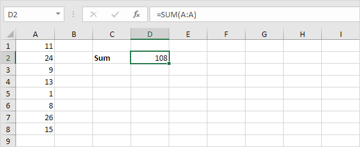
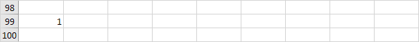
Catatan: Anda juga dapat menggunakan fungsi SUM di Excel untuk menjumlahkan seluruh baris. Misalnya, =SUM(5:5) menjumlahkan semua nilai di baris ke-5.
Jumlah Sel yang Tidak Bersebelahan (Sum Non-contiguous Cells)
Anda juga dapat menggunakan fungsi SUM di Excel untuk menjumlahkan sel yang tidak bersebelahan. Tidak bersebelahan berarti tidak bersebelahan.

Catatan: =A3+A5+A8 menghasilkan hasil yang sama persis!
AutoSum (Sum Otomatis)
Gunakan AutoSum atau tekan Alt + = untuk menjumlahkan kolom atau baris angka dengan cepat.
-
Pertama, pilih sel di bawah kolom angka (atau di sebelah deretan angka) yang ingin Anda jumlahkan.

-
Pada tab Beranda, dalam grup Pengeditan, klik AutoSum (atau tekan Alt + =).

-
Tekan Enter.

Jumlahkan Setiap Baris Ke-N
Rumus SUM di bawah ini menggunakan SUM, MOD dan ROW untuk menjumlahkan setiap baris ke-n. Ubah 3 menjadi 4 untuk menjumlahkan setiap baris ke-4, menjadi 5 untuk menjumlahkan setiap baris ke-5, dst.

Catatan: bilah rumus menunjukkan bahwa ini adalah rumus larik dengan mengapitnya dalam kurung kurawal {}. Jangan mengetik ini sendiri. Untuk memasukkan rumus array, selesaikan dengan menekan Ctrl+Shift+Enter.
Jumlahkan Bilangan Terbesar
Rumus SUM di bawah ini menggunakan SUM dan LARGE untuk menjumlahkan angka terbesar dalam suatu Range. Ubah {1,2,3,4} menjadi {1,2,3,4,5} untuk menjumlahkan 5 bilangan terbesar.

Catatan: =LARGE(A1:A11,2) cukup mengembalikan angka terbesar kedua.
Sum Range dengan Error
Rumus SUM di bawah ini menggunakan SUM dan IFERROR untuk menjumlahkan Range dengan kesalahan. Anda juga dapat menggunakan fungsi AGGREGATE di Excel untuk menjumlahkan Range dengan kesalahan.

Catatan: fungsi SUM di Excel secara otomatis mengabaikan nilai teks.
SUMIF
Untuk menjumlahkan sel berdasarkan satu kriteria (misalnya, lebih besar dari 9), gunakan fungsi SUMIF berikut (dua argumen).
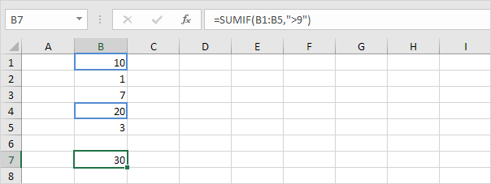
Untuk menjumlahkan sel berdasarkan satu kriteria (misalnya, hijau), gunakan fungsi SUMIF berikut (tiga argumen, argumen terakhir adalah rentang yang akan dijumlahkan).

Contoh Penggunaan Fungsi SUMIF
SUMIF
Kriteria Numerik | Kriteria Teks | Kriteria Tanggal | And Kriteria | Or Kriteria
Download file latihan sumif.xlsx
Fungsi SUMIF yang kuat di Excel menjumlahkan sel berdasarkan satu kriteria. Halaman ini berisi banyak contoh SUMIF yang mudah diikuti.
Kriteria Numerik
Gunakan fungsi SUMIF di Excel untuk menjumlahkan sel berdasarkan angka yang memenuhi kriteria tertentu.
-
Fungsi SUMIF di bawah (dua argumen) menjumlahkan nilai dalam rentang A1:A5 yang kurang dari atau sama dengan 10.
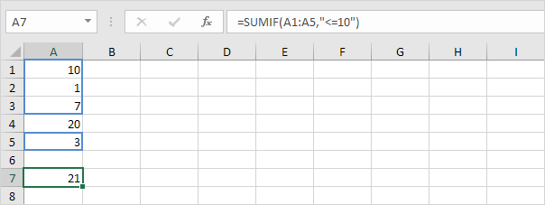
-
Fungsi SUMIF berikut memberikan hasil yang sama persis. Operator & menggabungkan simbol 'kurang dari atau sama dengan' dan nilai dalam sel C1.

-
Fungsi SUMIF di bawah ini (tiga argumen, argumen terakhir adalah rentang yang akan dijumlahkan) menjumlahkan nilai dalam rentang B1:B5 jika sel terkait dalam rentang A1:A5 berisi nilai 25.

-
Fungsi SUMIF berikut memberikan hasil yang sama persis (argumen kedua mengacu pada sel D1).

Kriteria Teks
Gunakan fungsi SUMIF di Excel untuk menjumlahkan sel berdasarkan string teks yang memenuhi kriteria tertentu. Selalu sertakan teks dalam tanda kutip ganda.
-
Fungsi SUMIF di bawah ini menjumlahkan nilai dalam rentang B1:B5 jika sel yang sesuai dalam rentang A1:A5 berisi lingkaran persis.

-
Fungsi SUMIF di bawah ini menjumlahkan nilai dalam rentang B1:B5 jika sel terkait dalam rentang A1:A5 tidak berisi segitiga sama persis.

-
Fungsi SUMIF di bawah ini menjumlahkan nilai dalam rentang B1:B5 jika sel yang sesuai dalam rentang A1:A5 berisi persis lingkaran + 1 karakter. Tanda tanya (?) cocok dengan tepat satu karakter.
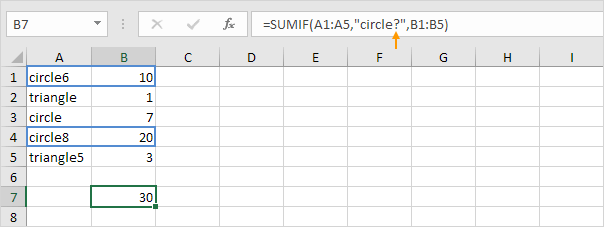
-
Fungsi SUMIF di bawah ini menjumlahkan nilai dalam rentang B1:B5 jika sel terkait dalam rentang A1:A5 berisi rangkaian nol atau lebih karakter + file. Tanda bintang (*) cocok dengan serangkaian karakter nol atau lebih.
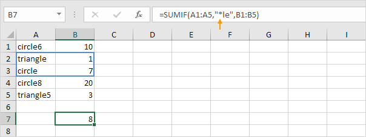
-
Fungsi SUMIF di bawah jumlah nilai dalam rentang B1:B5 jika sel yang sesuai dalam rentang A1:A5 berisi segitiga atau circle8 yang tepat.

Kriteria Tanggal
Gunakan fungsi SUMIF di Excel untuk menjumlahkan sel berdasarkan tanggal yang memenuhi kriteria tertentu.
-
Fungsi SUMIF di bawah ini menjumlahkan penjualan setelah 20 Januari 2018.

Catatan: fungsi DATE di Excel menerima tiga argumen: tahun, bulan, dan hari.
-
Fungsi SUMIF di bawah ini menjumlahkan penjualan hari ini.
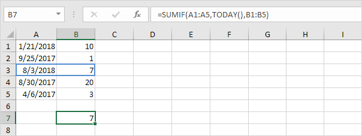
Catatan: hari ini adalah 3 Agustus 2018.
-
Fungsi SUMIFS (dengan huruf S di akhir) di bawah ini menjumlahkan penjualan antara dua tanggal.

Catatan: fungsi SUMIFS di Excel menjumlahkan sel berdasarkan dua atau lebih kriteria (argumen pertama adalah rentang yang akan dijumlahkan, diikuti oleh dua atau lebih pasangan rentang/kriteria). Sesuaikan tanggal untuk menjumlahkan penjualan pada bulan, tahun, dll.
And Kriteria
Menjumlahkan dengan kriteria Dan di Excel itu mudah.
Misalnya, untuk menjumlahkan sel yang memenuhi kriteria berikut: Google dan Stanford (dua rentang kriteria), cukup gunakan fungsi SUMIFS (dengan huruf S di akhir).

Catatan: ingat, saat menggunakan fungsi SUMIFS, argumen pertama adalah rentang yang akan dijumlahkan, diikuti oleh dua atau lebih pasangan rentang/kriteria.
Or Kriteria
Menjumlahkan dengan kriteria Or di Excel bisa jadi rumit.
-
Rumus di bawah ini menjumlahkan sel yang memenuhi kriteria berikut: Google atau Facebook (satu rentang kriteria). Tidak ada ilmu roket sejauh ini.

-
Namun, jika Anda ingin menjumlahkan sel yang memenuhi kriteria berikut: Google atau Stanford (dua rentang kriteria), Anda tidak bisa begitu saja menggunakan fungsi SUMIF dua kali (lihat gambar di bawah).
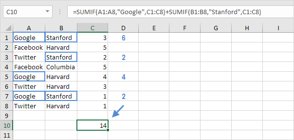
Catatan: sel yang memenuhi kriteria Google dan Stanford ditambahkan dua kali, tetapi hanya boleh ditambahkan satu kali. 10 adalah jawaban yang kita cari.
-
Rumus Array di bawah ini berhasil.

Catatan: selesaikan rumus array dengan menekan Ctrl+Shift+Enter. Excel menambahkan kurung kurawal {}. Kunjungi halaman kami tentang Penjumlahan dengan Atau Kriteria untuk instruksi mendetail tentang cara membuat Rumus Array ini.
SUMIFS
Untuk menjumlahkan sel berdasarkan beberapa kriteria (misalnya, lingkaran dan merah), gunakan fungsi SUMIFS berikut (argumen pertama adalah rentang yang akan dijumlahkan).
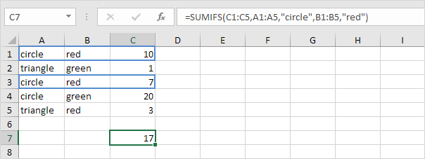
dengan cara yang sama, Anda dapat menggunakan fungsi AVERAGEIF untuk rata-rata sel berdasarkan satu kriteria dan fungsi AVERAGEIFS untuk rata-rata sel berdasarkan beberapa kriteria.
IF
Pelajari cara menggunakan fungsi logika Excel, seperti IF, AND, OR dan NOT.
Fungsi IF memeriksa apakah suatu kondisi terpenuhi, dan mengembalikan satu nilai jika benar dan nilai lain jika salah.
Sebagai contoh, perhatikan fungsi IF pada sel C2 di bawah ini.

Penjelasan: jika skor lebih besar atau sama dengan 60, fungsi IF mengembalikan Pass, jika tidak mengembalikan Fail. Kunjungi halaman kami tentang fungsi IF untuk lebih banyak contoh.
AND
Fungsi AND mengembalikan TRUE jika semua kondisi benar dan mengembalikan FALSE jika salah satu kondisi salah.
Sebagai contoh, perhatikan fungsi AND pada sel D2 di bawah ini.
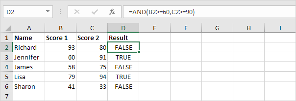
Penjelasan: fungsi AND mengembalikan TRUE jika skor pertama lebih besar atau sama dengan 60 dan skor kedua lebih besar atau sama dengan 90, selain itu mengembalikan FALSE.
OR
Fungsi OR mengembalikan TRUE jika salah satu kondisi adalah TRUE dan mengembalikan FALSE jika semua kondisi salah.
Sebagai contoh, perhatikan fungsi OR pada sel D2 di bawah ini.
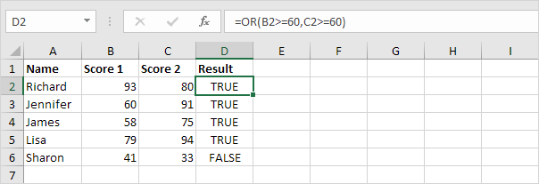
Penjelasan: fungsi OR mengembalikan TRUE jika setidaknya satu skor lebih besar dari atau sama dengan 60, selain itu mengembalikan FALSE. Kunjungi halaman kami tentang fungsi OR untuk lebih banyak contoh.
NOT
Fungsi NOT mengubah TRUE menjadi FALSE, dan FALSE menjadi TRUE.
Sebagai contoh, perhatikan fungsi NOT pada sel D2 di bawah ini.

Penjelasan: dalam contoh ini, fungsi NOT membalikkan hasil dari fungsi OR (lihat contoh sebelumnya).
Contoh Penggunaan Fungsi IF
Contoh IF Sederhana | And/Or Kriteria | IF Bersarang | Lebih lanjut mengenai IF
Fungsi IF adalah salah satu fungsi yang paling banyak digunakan di Excel, Halaman ini berisi banyak contoh IF yang mudah diikuti.
Contoh IF Sederhana
Fungsi IF memeriksa apakah suatu kondisi terpenuhi, dan mengembalikan satu nilai jika benar dan nilai lain jika salah.
1a. Misalnya, lihat fungsi IF di sel B2 di bawah ini.

Penjelasan: jika harga lebih besar dari 500, fungsi IF mengembalikan High, jika tidak mengembalikan Low.
1b. Fungsi IF berikut menghasilkan hasil yang sama persis.
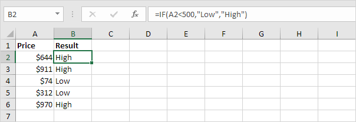
Catatan: Anda dapat menggunakan operator perbandingan berikut : = (sama dengan), > (lebih besar dari), < (kurang dari), >= (lebih besar atau sama dengan), <= (kurang dari atau sama dengan) dan <> (tidak sebanding dengan).
2. Selalu sertakan teks dalam tanda kutip ganda.

3a. Rumus di bawah ini menghitung kemajuan antara dua titik waktu.

3b. Anda dapat menggunakan fungsi IF untuk menampilkan string kosong jika nilai akhir belum dimasukkan (lihat baris 5).

Penjelasan: jika nilai akhir tidak kosong (<> berarti tidak sama dengan), fungsi IF menghitung kemajuan antara nilai awal dan akhir, selain itu akan menampilkan string kosong (dua tanda kutip ganda tanpa apa pun di antaranya).
And/Or Kriteria
Gunakan fungsi IF dalam kombinasi dengan fungsi AND dan fungsi OR dan jadilah ahli Excel.
-
Sebagai contoh, perhatikan fungsi IF pada sel D2 di bawah ini.

Penjelasan: fungsi AND mengembalikan TRUE jika skor pertama lebih besar atau sama dengan 60 dan skor kedua lebih besar atau sama dengan 90, selain itu mengembalikan FALSE. Jika TRUE, fungsi IF mengembalikan Pass, jika FALSE, fungsi IF mengembalikan Fail.
-
Sebagai contoh, perhatikan fungsi IF pada sel D2 di bawah ini.

Penjelasan: fungsi OR mengembalikan TRUE jika setidaknya satu skor lebih besar dari atau sama dengan 60, selain itu mengembalikan FALSE. Jika TRUE, fungsi IF mengembalikan Pass, jika FALSE, fungsi IF mengembalikan Fail.
-
Sebagai contoh, perhatikan fungsi IF pada sel D2 di bawah ini.

Penjelasan: fungsi AND di atas memiliki dua argumen yang dipisahkan oleh koma (Tabel, Hijau atau Biru). Fungsi AND mengembalikan TRUE jika Produk sama dengan "Tabel" dan Warna sama dengan "Hijau" atau "Biru". Jika TRUE, fungsi IF mengurangi harga sebesar 50%, jika FALSE, fungsi IF mengurangi harga sebesar 10%.
IF Bersarang (Nested If)
Fungsi IF di Excel bisa disarangkan, saat Anda memiliki beberapa kondisi yang harus dipenuhi. Nilai FALSE digantikan oleh fungsi IF lain untuk melakukan pengujian lebih lanjut.
-
Misalnya, lihat rumus IF bersarang di sel C2 di bawah ini.

Penjelasan: jika skor sama dengan 1, rumus IF bersarang menghasilkan Buruk, jika skor sama dengan 2, rumus IF bersarang menghasilkan Baik, jika skor sama dengan 3, rumus IF bersarang mengembalikan Sangat Baik, jika tidak maka mengembalikan Tidak Valid. Jika Anda memiliki Excel 2016 atau lebih baru, cukup gunakan fungsi IFS,
-
Misalnya, lihat rumus IF bersarang di sel C2 di bawah ini.

Penjelasan: jika skor kurang dari 60, rumus IF bersarang mengembalikan F, jika skor lebih besar atau sama dengan 60 dan kurang dari 70, rumus mengembalikan D, jika skor lebih besar atau sama dengan 70 dan kurang dari 80, rumus mengembalikan C, jika skor lebih besar atau sama dengan 80 dan kurang dari 90, rumus mengembalikan B, selain itu mengembalikan A.
Lebih lanjut mengenai IF
Fungsi IF adalah fungsi yang bagus. Mari kita lihat beberapa contoh keren lainnya.
-
Misalnya, gunakan IF dan AND untuk menguji apakah suatu nilai berada di antara dua angka
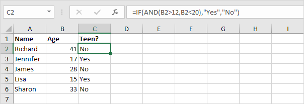
Penjelasan: fungsi AND mengembalikan TRUE jika orang tersebut lebih tua dari 12 dan lebih muda dari 20, selain itu mengembalikan FALSE. Jika TRUE, fungsi IF mengembalikan Ya, jika FALSE, fungsi IF mengembalikan Tidak.
-
Anda dapat menggabungkan IF dengan AVERAGE, SUM dan fungsi Excel lainnya. Langit adalah batasnya!
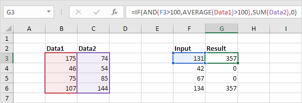
Penjelasan: fungsi AND mengembalikan TRUE jika nilai input lebih besar dari 100 dan rata-rata nilai dalam rentang bernama Data1 lebih besar dari 100, selain itu mengembalikan FALSE. Jika TRUE, fungsi IF mengembalikan jumlah Data2, jika FALSE, fungsi IF mengembalikan 0.
Bingung? Anda selalu dapat menggunakan alat Evaluasi Rumus untuk menelusuri rumus IF Anda. Alat Excel ini membantu Anda memahami rumus.
- Misalnya, pilih sel G3 di atas.
-
Pada tab Rumus, dalam grup Audit Rumus, klik Evaluasi Rumus.

-
Klik Evaluasi beberapa kali.

Catatan: coba sendiri. Unduh file Excel dan pilih salah satu rumus IF yang dijelaskan di halaman ini. Anda dapat menggunakan alat ini untuk menelusuri semua jenis rumus.
Operator Perbandingan
(Comparison Operators)
Sama dengan | Lebih besar dari | Kurang dari | Lebih besar dari atau sama dengan | Kurang dari atau sama dengan | Tidak sebanding dengan
Gunakan operator perbandingan di Excel untuk memeriksa apakah dua nilai sama satu sama lain, jika satu nilai lebih besar dari nilai lain, jika satu nilai kurang dari nilai lain, dll.
Sama dengan (Equal to)
Operator sama dengan (=) mengembalikan TRUE jika dua nilai sama satu sama lain.
-
Misalnya, lihat rumus di sel C1 di bawah ini.

Penjelasan: rumus mengembalikan TRUE karena nilai di sel A1 sama dengan nilai di sel B1. Selalu awali rumus dengan tanda sama dengan (=).
-
Fungsi IF di bawah ini menggunakan operator sama dengan.

Penjelasan: jika dua nilai (angka atau string teks) sama satu sama lain, fungsi IF mengembalikan Ya, jika tidak mengembalikan Tidak.
Lebih besar dari (Greater than)
Operator lebih besar dari (>) mengembalikan TRUE jika nilai pertama lebih besar dari nilai kedua.
-
Misalnya, lihat rumus di sel C1 di bawah ini.

Penjelasan: rumus mengembalikan TRUE karena nilai di sel A1 lebih besar dari nilai di sel B1.
-
Fungsi OR di bawah ini menggunakan operator lebih besar dari.

Penjelasan: fungsi OR ini mengembalikan TRUE jika setidaknya satu nilai lebih besar dari 50, selain itu mengembalikan FALSE.
Kurang dari (Less than)
Operator kurang dari (<) mengembalikan TRUE jika nilai pertama lebih kecil dari nilai kedua.
-
Misalnya, lihat rumus di sel C1 di bawah ini.

Penjelasan: rumus mengembalikan TRUE karena nilai di sel A1 lebih kecil dari nilai di sel B1.
-
Fungsi AND di bawah ini menggunakan operator kurang dari.

Penjelasan: fungsi AND ini mengembalikan TRUE jika kedua nilai kurang dari 80, selain itu mengembalikan FALSE.
Lebih dari atau sama dengan (Greater than or equal to)
Operator lebih besar dari atau sama dengan (>=) mengembalikan TRUE jika nilai pertama lebih besar dari atau sama dengan nilai kedua.
-
Misalnya, lihat rumus di sel C1 di bawah ini.

Penjelasan: rumus mengembalikan TRUE karena nilai di sel A1 lebih besar atau sama dengan nilai di sel B1.
-
Fungsi COUNTIF di bawah ini menggunakan operator yang lebih besar atau sama dengan.

Penjelasan: fungsi COUNTIF ini menghitung jumlah sel yang lebih besar atau sama dengan 10.
Kurang dari atau sama dengan (Less than or equal to)
Operator kurang dari atau sama dengan (<=) mengembalikan TRUE jika nilai pertama lebih kecil atau sama dengan nilai kedua.
-
Misalnya, lihat rumus di sel C1 di bawah ini.

Penjelasan: rumus mengembalikan TRUE karena nilai di sel A1 kurang dari atau sama dengan nilai di sel B1.
-
Fungsi SUMIF di bawah ini menggunakan operator kurang dari atau sama dengan.

Penjelasan: fungsi SUMIF ini menjumlahkan nilai dalam rentang A1:A5 yang kurang dari atau sama dengan 10.
Tidak sebanding dengan (Not Equal to)
Operator tidak sama dengan (<>) mengembalikan TRUE jika dua nilai tidak sama satu sama lain.
-
Misalnya, lihat rumus di sel C1 di bawah ini.
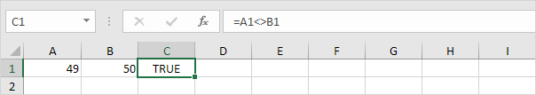
Penjelasan: rumus mengembalikan TRUE karena nilai di sel A1 tidak sama dengan nilai di sel B1.
-
Fungsi IF di bawah ini menggunakan operator tidak sama dengan.

Penjelasan: jika dua nilai (angka atau string teks) tidak sama satu sama lain, fungsi IF mengembalikan Tidak, jika tidak mengembalikan Ya.
Tahun, Bulan, Hari (Year, Month, Day)
Untuk mendapatkan tahun dari suatu tanggal, gunakan fungsi YEAR.

Catatan: gunakan fungsi MONTH dan DAY untuk mendapatkan bulan dan hari dari suatu tanggal.
Fungsi Tanggal
-
Untuk menambahkan jumlah hari ke tanggal, gunakan rumus sederhana berikut.

-
Untuk menambahkan jumlah tahun, bulan dan/atau hari, gunakan fungsi DATE.
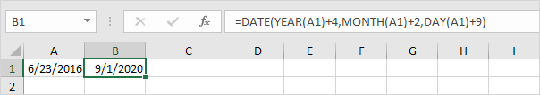
Catatan: fungsi DATE menerima tiga argumen: tahun, bulan dan hari. Excel tahu bahwa 6 + 2 = 8 = Agustus memiliki 31 hari dan bergulir ke bulan berikutnya (23 Agustus + 9 hari = 1 September).
Tanggal & Waktu Saat Ini
Untuk mendapatkan tanggal dan waktu saat ini, gunakan fungsi NOW.

Catatan: gunakan fungsi TODAY untuk memasukkan tanggal hari ini di Excel.
Jam, Menit, Detik (Hour, Minute, Second)
Untuk mengembalikan jam, gunakan fungsi HOUR.

Catatan: gunakan fungsi MINUTE dan SECOND untuk mengembalikan menit dan detik.
Fungsi Waktu
Untuk menambahkan jumlah jam, menit dan/atau detik, gunakan fungsi TIME.

Catatan: Excel menambahkan 2 jam, 10 + 1 = 11 menit dan 70 - 60 = 10 detik.
DateDif
Download file latihan datedif.xlsx
Untuk mendapatkan jumlah hari, minggu atau tahun antara dua tanggal di Excel, gunakan fungsi DATEDIF. Fungsi DATEDIF memiliki tiga argumen.
-
Isi "d" untuk argumen ketiga untuk mendapatkan jumlah hari di antara dua tanggal.

Catatan: =A2-A1 menghasilkan hasil yang sama persis!
-
Isi "m" untuk argumen ketiga untuk mendapatkan jumlah bulan di antara dua tanggal.

-
Isi "y" untuk argumen ketiga untuk mendapatkan jumlah tahun di antara dua tanggal.

-
Isi "yd" untuk argumen ketiga untuk mengabaikan tahun dan mendapatkan jumlah hari di antara dua tanggal.

-
Isi "md" untuk argumen ketiga untuk mengabaikan bulan dan mendapatkan jumlah hari di antara dua tanggal.

-
Isi "ym" untuk argumen ketiga untuk mengabaikan tahun dan mendapatkan jumlah bulan di antara dua tanggal.

Catatan penting: fungsi DATEDIF mengembalikan jumlah lengkap hari, bulan atau tahun. Ini mungkin memberikan hasil yang tidak terduga ketika nomor hari/bulan dari tanggal kedua lebih rendah dari nomor hari/bulan dari tanggal pertama. Lihat contoh di bawah ini.

Bedanya 6 tahun. Hampir 7 tahun! Gunakan rumus berikut untuk mengembalikan 7 tahun.

Tanggal hari ini (Today's Date)
Hari ini dan Sekarang | Tanggal dan Waktu Statis
Download file latihan todays-date.xlsx
Untuk memasukkan tanggal hari ini di Excel, gunakan fungsi TODAY. Untuk memasukkan tanggal dan waktu saat ini, gunakan fungsi NOW. Untuk memasukkan tanggal dan waktu saat ini sebagai nilai statis, gunakan pintasan keyboard.
Hari ini dan Sekarang (Today and Now)
-
Untuk memasukkan tanggal hari ini di Excel, gunakan fungsi TODAY.

Catatan: fungsi TODAY tidak membutuhkan argumen. Tanggal ini akan diperbarui secara otomatis saat Anda membuka buku kerja pada tanggal lain.
-
Untuk memasukkan tanggal dan waktu sekarang, gunakan fungsi NOW.

Catatan: fungsi NOW tidak membutuhkan argumen. Waktu ini akan diperbarui secara otomatis setiap kali lembar dihitung ulang. Ini terjadi saat Anda membuat perubahan ke sel mana pun atau saat Anda membuka buku kerja. Tekan F9 untuk menghitung ulang buku kerja secara manual.
-
Untuk memasukkan waktu saat ini saja, gunakan NOW()-TODAY() dan terapkan format waktu.

Catatan: tanggal disimpan sebagai angka di Excel dan menghitung jumlah hari sejak 0, Januari 1900. Waktu ditangani secara internal sebagai angka antara 0 dan 1. Kunjungi halaman kami tentang format tanggal dan waktu untuk informasi selengkapnya.
Tanggal dan Waktu Statis
-
Untuk memasukkan tanggal saat ini sebagai nilai statis, tekan Ctrl+; (titik koma).

Catatan: tanggal ini tidak akan berubah saat Anda membuka buku kerja pada tanggal lain.
-
Untuk memasukkan waktu saat ini sebagai nilai statis, tekan Ctrl+Shift+;(titik koma).

Catatan: waktu ini tidak akan berubah saat Anda membuat perubahan ke sel atau saat Anda membuka buku kerja.
-
Untuk memasukkan tanggal dan waktu saat ini sebagai nilai statis, cukup tekan Ctrl+; (titik koma), masukkan spasi dan tekan Ctrl+Shift+;(titik koma).

Format Tanggal dan Waktu
Download file latihan tanggal-waktu-format.xlsx
Tanggal dan waktu di Excel dapat ditampilkan dalam berbagai cara. Untuk menerapkan format Tanggal atau Waktu, jalankan langkah-langkah berikut.
-
Pilih sel A1.

- Klik kanan, lalu klik Format Sel.
-
Dalam daftar Kategori, pilih Tanggal, lalu pilih format Tanggal.
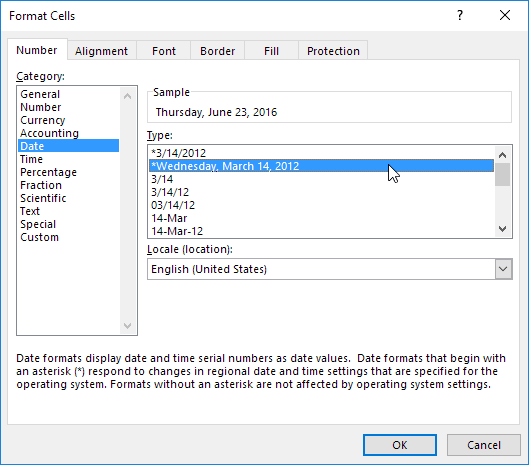
-
Klik Oke.

Catatan: untuk menerapkan format Waktu, dalam daftar Kategori, pilih Waktu.
-
Tanggal disimpan sebagai angka di Excel dan menghitung jumlah hari sejak 0, Januari 1900. Waktu ditangani secara internal sebagai angka antara 0 dan 1. Untuk melihat ini dengan jelas, ubah format angka sel A1, B1 dan C1 ke Umum.

Catatan: ternyata, 42544 hari setelah 0, 1900 sama dengan 23 Juni 2016. 6:00 direpresentasikan sebagai 0,25 (seperempat sepanjang hari).
-
Anda dapat memasukkan waktu sebagai 6:00, tetapi Excel menampilkan waktu ini sebagai 6:00:00 di bilah rumus. AM digunakan untuk waktu malam dan pagi hari. PM digunakan untuk waktu pada sore dan malam hari.

-
Ubah format angka sel C1 menjadi Date only.

Catatan: sel C1 masih berisi angka 42544.25. Kami hanya mengubah tampilan nomor, bukan nomor itu sendiri.
Hitung Umur (Calculate Age)
Download file latihan hitung-umur.xlsx
Untuk menghitung usia seseorang di Excel, gunakan DATEDIF dan TODAY. Fungsi DATEDIF memiliki tiga argumen.
-
Masukkan tanggal lahir ke dalam sel A2.

-
Masukkan fungsi TODAY ke sel B2 untuk mengembalikan tanggal hari ini.

-
Fungsi DATEDIF di bawah ini menghitung usia seseorang.
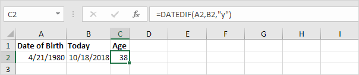
Catatan: isi "y" untuk argumen ketiga untuk mendapatkan jumlah tahun lengkap antara tanggal lahir dan tanggal hari ini.
-
Hitung usia seseorang tanpa menampilkan tanggal hari ini.
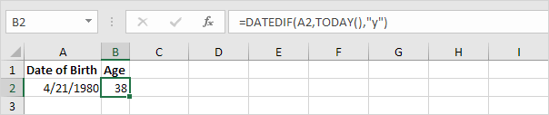
-
Hitung usia seseorang pada tanggal tertentu.

Catatan: fungsi DATE menerima tiga argumen: tahun, bulan dan hari.
-
Hitung usia seseorang dalam tahun, bulan dan hari.

Catatan: isi "ym" untuk argumen ketiga untuk mengabaikan tahun dan mendapatkan jumlah bulan di antara dua tanggal. Isi "md" untuk argumen ketiga untuk mengabaikan bulan dan mendapatkan jumlah hari di antara dua tanggal. Gunakan operator & untuk menggabungkan string.
Perbedaan waktu
Rumus Sederhana | Rumus Selisih Waktu | Selisih Waktu dalam Jam sebagai Nilai Desimal | Lembar Waktu
Download file latihan perbedaan-waktu.xlsx
Menghitung perbedaan antara dua kali di Excel bisa jadi rumit. Waktu ditangani secara internal sebagai angka antara 0 dan 1.
Rumus Sederhana
Mari kita mulai dengan rumus sederhana yang menghitung selisih antara dua waktu di hari yang sama.
-
Cukup kurangi waktu mulai dari waktu akhir.
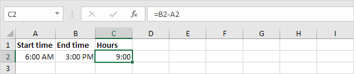
Catatan: AM digunakan untuk waktu malam dan pagi hari. PM digunakan untuk waktu pada sore dan malam hari. Ubah format Waktu untuk menampilkan waktu dengan atau tanpa AM/PM.
-
Ubah format angka nilai di sel A2, B2 dan C2 menjadi Umum.

Catatan: waktu ditangani secara internal sebagai angka antara 0 dan 1. Misalnya, pukul 06:00 direpresentasikan sebagai 0,25 (seperempat sepanjang hari).
Rumus Selisih Waktu
Rumus sederhana yang ditunjukkan di atas tidak berfungsi jika waktu mulai sebelum tengah malam dan waktu berakhir setelah tengah malam.
-
Waktu yang negatif ditampilkan sebagai ######.

-
Untuk melihat ini dengan jelas, ubah format angka dari nilai di sel A2, B2 dan C2 ke Umum.

-
Rumus Selisih Waktu di bawah ini selalu berhasil.

Penjelasan: jika waktu akhir lebih besar atau sama dengan waktu mulai, cukup kurangi waktu mulai dari waktu akhir. Jika tidak, tambahkan 1 (hari penuh) ke waktu akhir untuk menunjukkan waktu pada hari berikutnya dan kurangi waktu mulai.
Perbedaan Waktu dalam Jam sebagai Nilai Desimal
Untuk menghitung selisih antara dua kali dalam jam sebagai nilai desimal, kalikan rumus sebelumnya dengan 24 dan ubah format angka menjadi Umum.
Rumus di bawah ini berhasil.

Lembar Waktu
Hitung total jam, jam reguler, dan jam lembur dengan kalkulator absen kami.

Hari Kerja (Weekdays)
Fungsi hari kerja | Fungsi hari jaringan | Fungsi hari kerja
Download file latihan hari-kerja.xlsx
Pelajari cara mendapatkan hari dalam seminggu dari sebuah tanggal di Excel dan cara mendapatkan jumlah hari kerja atau hari kerja di antara dua tanggal.
Fungsi hari kerja
-
Fungsi WEEKDAY di Excel mengembalikan angka dari 1 (Minggu) hingga 7 (Sabtu) yang mewakili hari dalam seminggu dari suatu tanggal. Ternyata, 18/12/2017 jatuh pada hari Senin.

-
Anda juga dapat menggunakan fungsi TEXT untuk menampilkan hari dalam seminggu.

-
Atau buat format tanggal khusus ( dddd ) untuk menampilkan hari dalam seminggu.

Fungsi Networkdays
-
Fungsi NETWORKDAYS mengembalikan jumlah hari kerja (tidak termasuk akhir pekan) di antara dua tanggal.

-
Jika Anda memberikan daftar hari libur, fungsi NETWORKDAYS mengembalikan jumlah hari kerja (tidak termasuk akhir pekan dan hari libur) di antara dua tanggal.

Kalender di bawah ini membantu Anda memahami fungsi NETWORKDAYS.

-
Tanggal disimpan sebagai angka di Excel dan menghitung jumlah hari sejak 01 Januari 1900. Alih-alih menyediakan daftar, berikan konstanta array dari angka yang mewakili tanggal ini. Untuk mencapai ini, pilih E1:E2 dalam rumus dan tekan F9.

Fungsi hari kerja
Fungsi WORKDAY adalah (hampir) kebalikan dari fungsi NETWORKDAYS. Ini mengembalikan tanggal sebelum atau setelah jumlah hari kerja tertentu (akhir pekan tidak termasuk).

Catatan: fungsi WORKDAY mengembalikan nomor seri tanggal. Terapkan format Tanggal untuk menampilkan tanggal.
Kalender di bawah ini membantu Anda memahami fungsi WORKDAY.

Sekali lagi, jika Anda memberikan daftar hari libur, fungsi WORKDAY mengembalikan tanggal sebelum atau setelah jumlah hari kerja tertentu (tidak termasuk akhir pekan dan hari libur).
Hari sampai Ulang Tahun
Download file latihan hari-sampai-ulang tahun.xlsx
Untuk menghitung jumlah hari hingga ulang tahun Anda di Excel, jalankan langkah-langkah berikut.
-
Masukkan tanggal lahir ke dalam sel A2.

-
Masukkan fungsi TODAY ke sel B2 untuk mengembalikan tanggal hari ini.
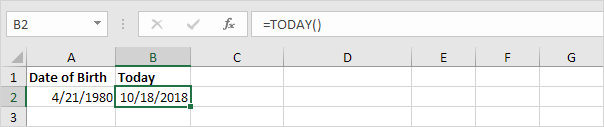
-
Bagian tersulit untuk mendapatkan jumlah hari sampai ulang tahun Anda adalah menemukan ulang tahun Anda berikutnya. Rumus di bawah ini berhasil.

Penjelasan: Fungsi DATE menerima tiga argumen: tahun, bulan dan hari. Kami menggunakan fungsi DATEDIF untuk menemukan jumlah tahun lengkap ("y") antara Tanggal Lahir dan Hari Ini. DATEDIF(A2,B2,"y") sama dengan 38. Jika 38 tahun penuh telah berlalu sejak tanggal lahir Anda (dengan kata lain, Anda telah merayakan ulang tahun ke-38), ulang tahun Anda berikutnya adalah 38 + 1 = 39 tahun setelahnya tanggal lahirmu.
-
Selanjutnya, kita menggunakan fungsi DATEDIF untuk mencari jumlah hari ("d") antara Hari Ini dan Ulang Tahun Berikutnya.

Hari Terakhir Bulan Ini
Download file latihan hari-terakhir-bulan-ini.xlsx
Untuk mendapatkan tanggal hari terakhir bulan di Excel, gunakan fungsi EOMONTH (Akhir Bulan.
-
Misalnya, dapatkan tanggal hari terakhir bulan ini.

Catatan: fungsi EOMONTH mengembalikan nomor seri tanggal. Terapkan format Tanggal untuk menampilkan tanggal.
-
Misalnya, dapatkan tanggal hari terakhir bulan berikutnya.

-
Misalnya, dapatkan tanggal hari terakhir bulan berjalan - 8 bulan = 6 - 8 = -2 = Oktober (-2 + 12 = 10), 2015!

Tambah atau Kurangi Waktu
Tambahkan Jam, Menit, dan Detik | Tambahkan Waktu | Kurangi Menit | Perbedaan waktu
Download file latihan tambah-kurang-waktu.xlsx
Gunakan fungsi TIME di Excel untuk menambah atau mengurangi jam, menit dan detik. Untuk menambahkan waktu di Excel, cukup gunakan fungsi SUM.
Tambahkan Jam, Menit, dan Detik
Ingat, untuk memasukkan waktu, gunakan ":" (titik dua).
-
Masukkan waktu ke dalam sel A1.

-
Untuk menambahkan 2 jam 30 menit ke waktu ini, masukkan rumus yang ditunjukkan di bawah ini.
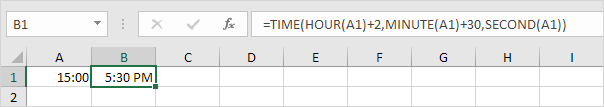
Penjelasan: fungsi TIME memiliki 3 argumen. Pertama, gunakan HOUR, MINUTE dan SECOND untuk membuat waktu yang dimasukkan di sel A1. Selanjutnya, tambahkan 2 jam 30 menit.
- Pilih sel B1.
- Klik kanan, lalu klik Format Cells (atau tekan Ctrl+1).
-
Dalam daftar Kategori, pilih Waktu, lalu pilih format Waktu.

-
Klik Oke.

-
Masukkan waktu ke dalam sel A1 (gunakan 2 titik dua untuk memasukkan detik).

-
Untuk menambahkan 10 detik ke waktu ini, masukkan rumus yang ditunjukkan di bawah ini.

Catatan: kami mengubah format Waktu menjadi 13:30:55 (lihat langkah 5).
Untuk mengubah format Waktu, jalankan langkah-langkah berikut.
Tambahkan Waktu
Untuk menambahkan waktu di Excel, cukup gunakan fungsi SUM. Untuk menampilkan total lebih dari 24 jam, ubah format Waktu.
-
Misalnya, tugas A membutuhkan 8 jam untuk diselesaikan, tugas B membutuhkan 4 jam dan 30 menit untuk diselesaikan, dll.

-
Untuk menghitung total durasi, cukup gunakan fungsi SUM.
-
Ubah durasi tugas D dari 5 jam menjadi 7 jam.
Untuk menampilkan total lebih dari 24 jam, jalankan langkah-langkah berikut.
- Pilih sel B6.
- Klik kanan, lalu klik Format Cells (atau Ctrl+1).
- Pilih kategori Kustom.
-
Ketik kode format angka berikut: [h]:mm

-
Klik Oke.
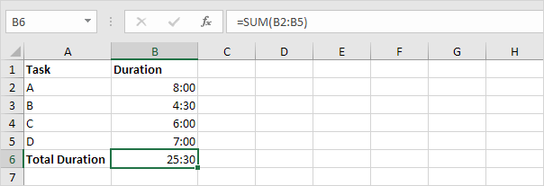
Catatan: kunjungi halaman kami tentang format Tanggal dan Waktu untuk mempelajari lebih lanjut tentang topik ini.
Kurangi Menit
Untuk mengurangi jam, menit, atau detik dari suatu waktu, gunakan fungsi TIME (dan HOUR, MINUTE dan SECOND).
-
Masukkan waktu ke dalam sel A1.

-
Untuk mengurangi 33 menit dari waktu ini, masukkan rumus yang ditunjukkan di bawah ini.

Perbedaan waktu
Menghitung perbedaan antara dua kali di Excel bisa jadi rumit.
-
Untuk menghitung selisih antara dua waktu di hari yang sama, cukup kurangi waktu mulai dari waktu berakhir.

Catatan: kami mengubah format Waktu menjadi 13:30 (lihat langkah 5 di bawah " Tambahkan Jam, Menit, dan Detik").
-
Rumus sederhana ini tidak bekerja jika waktu mulai sebelum tengah malam dan waktu berakhir setelah tengah malam. Waktu Perbedaan rumus di bawah ini selalu bekerja.

-
Rumus di bawah ini menghitung selisih antara dua kali dalam jam sebagai nilai desimal.
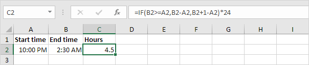
Catatan: kunjungi halaman kami tentang Perbedaan Waktu untuk memahami logika di balik rumus ini.
Quarter
Download file latihan quarter.xlsx
Rumus mudah yang mengembalikan kuartal untuk tanggal tertentu. Tidak ada fungsi bawaan di Excel yang dapat melakukan ini.
-
Masukkan rumus yang ditunjukkan di bawah ini.

Penjelasan: ROUNDUP(x,0) selalu membulatkan x ke atas ke bilangan bulat terdekat. Fungsi MONTH mengembalikan nomor bulan dari suatu tanggal. Dalam contoh ini, rumus dikurangi menjadi ROUNDUP=(5/3,0), ROUNDUP=(1.666667,0), 2. Mei ada di Kuartal 2.
-
Mari kita lihat apakah formula ini bekerja untuk semua bulan.

Penjelasan: sekarang tidak sulit untuk melihat bahwa tiga nilai (bulan) pertama di kolom B dibulatkan menjadi 1 (Kuartal 1), tiga nilai (bulan) berikutnya di kolom B dibulatkan menjadi 2 (Kuartal 2), dst .
Hari Dalam Setahun (Day of the Year)
Download file latihan hari-dalam-setahun.xlsx
Rumus mudah yang mengembalikan hari dalam setahun untuk tanggal tertentu. Tidak ada fungsi bawaan di Excel yang dapat melakukan ini.
-
Untuk mendapatkan tahun dari suatu tanggal, gunakan fungsi YEAR.

-
Gunakan fungsi DATE di bawah ini untuk mengembalikan 1 Januari 2016. Fungsi DATE menerima tiga argumen: tahun, bulan, dan hari.

-
Rumus di bawah ini mengembalikan hari dalam setahun.
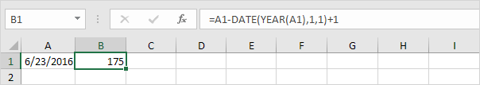
Penjelasan: tanggal dan waktu disimpan sebagai angka di Excel dan menghitung jumlah hari sejak 0, 1900 Januari. 23 Juni 2016 sama dengan 42544. 1 Januari 2016 sama dengan 42370. Mengurangi angka-angka ini dan menambahkan 1 menghasilkan hari dalam setahun. 42544 - 42370 + 1 = 174 + 1 = 175.